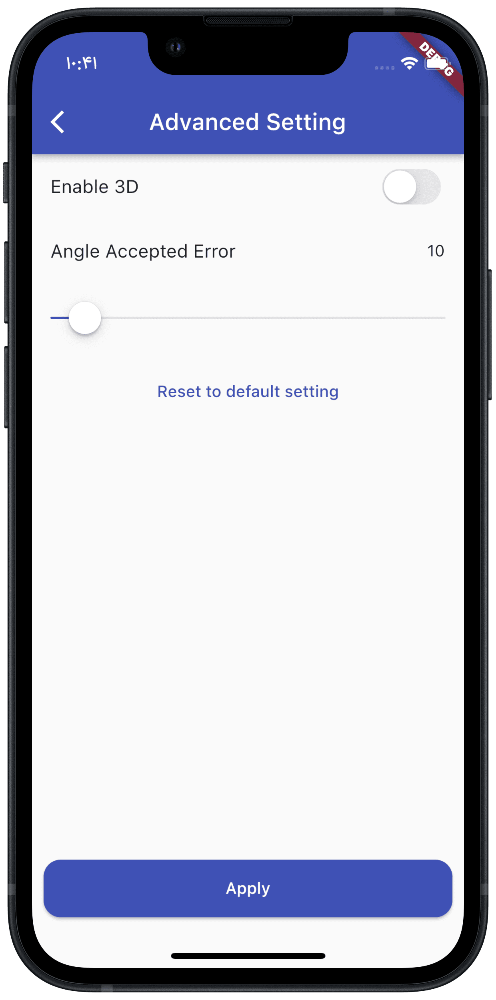
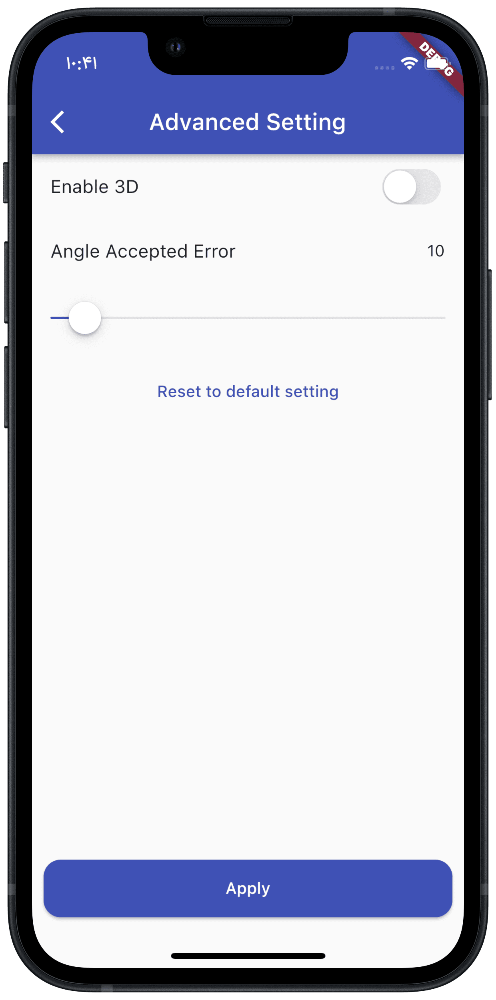
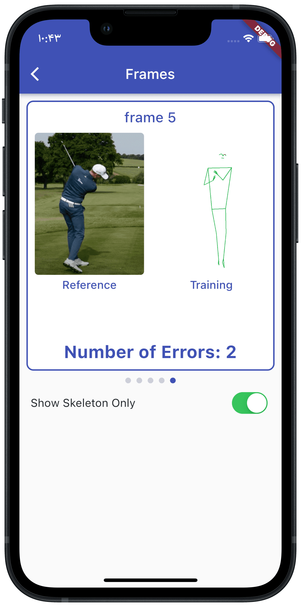
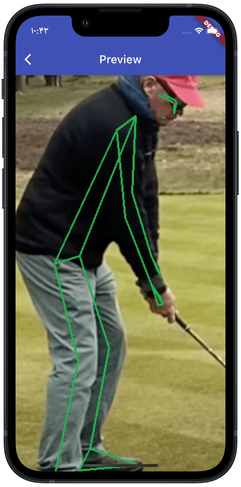
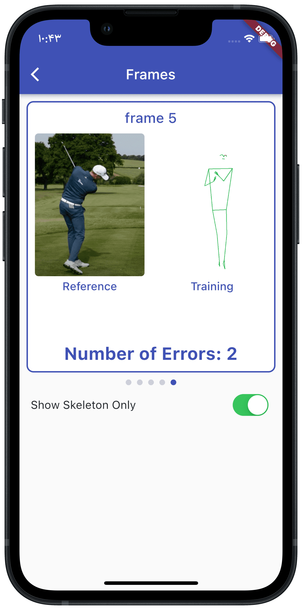
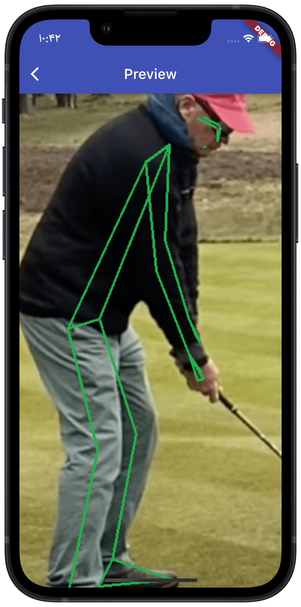

Stamina - Bachelor's Thesis
Every Bachelor's student should undertake a project by the end of its last semester and that project, theoretically, is a representative of all the knowledge which the student has gained throughout its studies. Academic projects can be classified into two categories, research based and project based. Stamina lies under the project based category.
Abstract
It cannot be denied that Covid 19 has had negative impacts on the way people exercise since many gyms and work-out sessions have been closed. Consequently, there has been an upward trend in the number of users who subscribe to weekly or seasonal training plans such as Apple Fitness+ or Peleton which provide instructions using videos and voice assistants to ensure that users can follow them precisely. However, these services are unable to check if the user performs the actions accurately. Since there is no measurement that help ensure that they are not performing movements incorrectly, not only may users lose their motivation in continuing exercise activity, they may also end up with severe injuries in long term.
Pros and Cons of the services in the market
There are many services that provide different procedures for work-out activities. Tempo is a service that introduces novel techniques for indoor work-out. It includes over a thousand of workout videos and provides guided work-out sessions by top professionals in different fields. The main selling point of this service is that it analyses user’s posture and actions in real-time and gives a detailed insight about the user’s performance. It also comes with lifting equipment that is recognized by the app. This app has a leaderboard which shows other users’ performances and encourages users to reach the top of the leaderboard. However, there are many reasons why this service is not reachable to many people. First of all, it requires users to pay for the service on either monthly or yearly basis, which is not ideal for many users. Moreover, in order to take advantage of the more sophisticated features of this application such as posture recognition, users should use high-end iPhones, more specifically, iPhones that are equipped with lidar sensors such as iPhone XS and iPhone XR. This is not feasible for large number of people, since most of the people use less advanced or older models of iPhones. More importantly, this service overlooks android users, which means that the people who own Android smartphones cannot use this service. Another alternative service is called Plank which is developed by Exer. This application is also able to examine user’s movements and presents voice feedbacks for guidance. The advantage of this service compared to previous one is that it does not need any additional hardware and it only uses phone’s built-in camera to proceed. However, it is only compatible with iOS devices such as iPhone and iPad. In other words, Android users cannot use the services and the application unless they afford an iOS device, which is not practical for many people.
Brief look at other studies
We have investigated many other studies in which there are three types of feedback functions which ensure that beginners can make progress and stay motivated during training sessions. In one pilot study, OpenPose was used to detect necessary points to proceed the evaluation of squat postures. While the training posture should be automated, among different approaches regarding motion analysis OpenPose was chosen due to its ease of use and limitation in time, space and expenses. However, since only two-dimensional images are involved, some complicated movements may be ignored or compromised. That is why the position of the camera matters. Skelton is detected using OpenPose to evaluate human movement. Ideal posture is the one which receives the highest score as there are 4 parts of the body which are crucial in the measurement. Having given a score to different parts of the body, user can observe them as numbers. In video annotation, two types of feedbacks are suggested. Firstly, user can compare its training pictures with the instructor on the screen, secondly, the voice assistant can guide the user and let it know about its errors while performing. Photographing angle can affect the outcome. Based on an experiment, it is proved that some points may seem very similar to system whereas from another angle, the differences stand out. We do not want to limit movements to a specific training such as yoga or squat which some other studies did. Hence, we aim to generalise it to any activity which involves body posture. In other words, it can potentialy be used in military or dance classes.
⚡️Stamina
We propose a system that can be used with any modern smartphone to analyze and detect errors. A trainer records the workout which is uploaded to a cloud service and main elements of the body are extracted by the cloud service. Unlike mentioned services in the previous section, our app is compatible with a large proportion of the smartphones and tablets and it is not limited to a certain platform. There are several scenarios in which the user can examine the movements. The user can create a workout session in which he/she defines and labels that session. Next, the user is required to upload a video of that activity which is used as a reference video. To get the most out of this algorithm, the reference video should be a clip of a professional whose movements would meet the criteria of correct movements. Afterwards, the user can record a short video of themselves while performing the movements. At this point, the user would eventually stop recording and upload the video to the server. Then, the server will return an analyzed and processed video of the user’s actions and this is the stage where the user can see how much his movements have been aligned with the reference video. This process can be repeated many times and the app projects the progress of the user into a chart to visualize the progress. The figures are shown in chronological order and the user can monitor its development. The advantage of this design is that the user can simultaneously monitor its progress in different exercises by creating different exercise sessions. Every session has its dedicated reference video and chart. Although Stamina is an academic project, it was one of the most complex project that has ever done by the United Twins Team, since the team was responsible for all of the stages of the development, from initial ideas and design to validation and implementation. The design process was not limited to the code base and it included every component of the application i.e. database design, system architecture and etc.
Deeper Look at ⚡️Stamina
It starts with a login page. Users can either create a new account or log in, provided they have made an account before. The advantage of having account in this app is that the user can restore its progress and never lose its data. This feature is useful when user wants to switch its device or more than one person is using the app. With the consent of the user, this app creates a backup from the user's data and restore that backup whenever the user logs in in any device.


Authentication page
After successfully completing the authentication stage, the dashboard page is shown. This page contains all of the workout categories that have been instantiated by the user or are to be instantiated. These categories contain reference images that would be compared to user's movements. User can also remove those categories.


Dashboard page
Upon creating a new session, the user should set a name for the session, after which it should set reference images that can be either chosen from the predefined images in the application or selected from the library of the phone.

Reference image set up procedure
In the next stage, the user can upload the test images that represent the movement of itself. Then, photos would be uploaded and it analyzed by the API. User can now get to know its performance by the number of error points which are shown as red dots in the annonated image. If user uploads another test images set, it would not override its previous data. It would add another data which helps the user to see its performance nd progress throughout the time. The data is visualised using interactive charts that indicate the overall progress of the user, as well as its performance in each frame.

 

Test images set up procedure
 



Output
Data visualization
There are more details lying in the background of this app, but that would be a story for another day. However, we encourage you to have a look at the thesis paper and presentation slides appreciate the attention to details and times we put on this project.